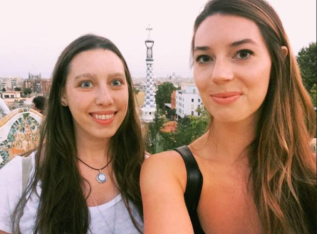
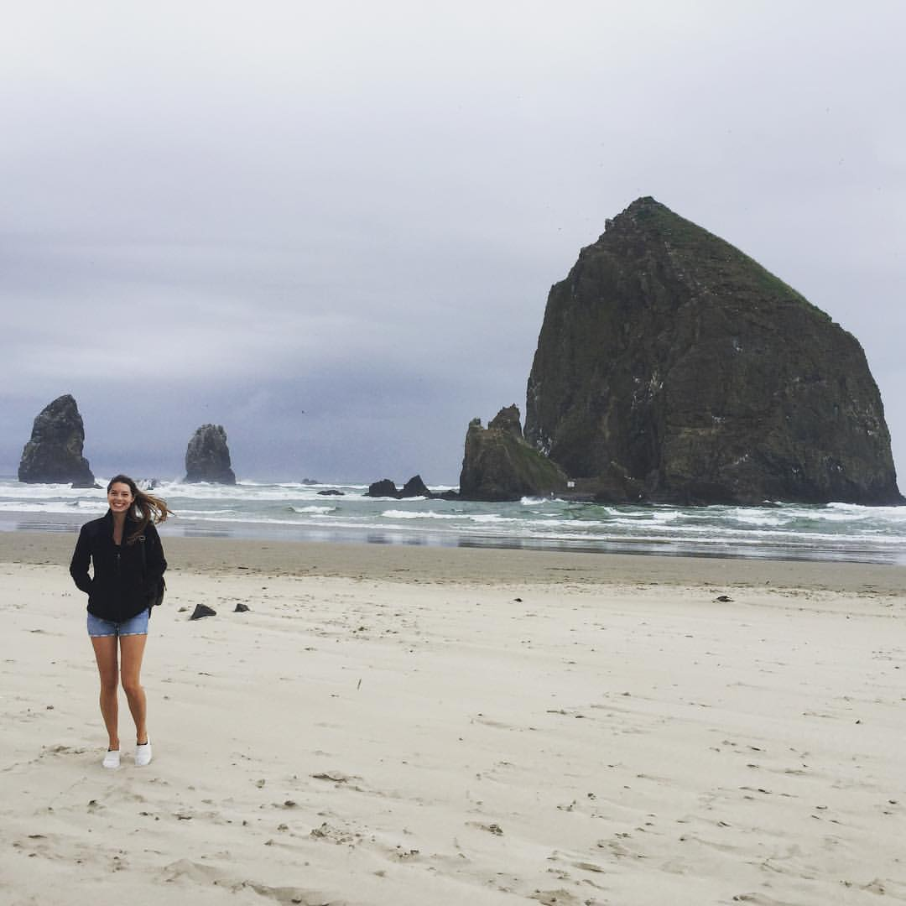
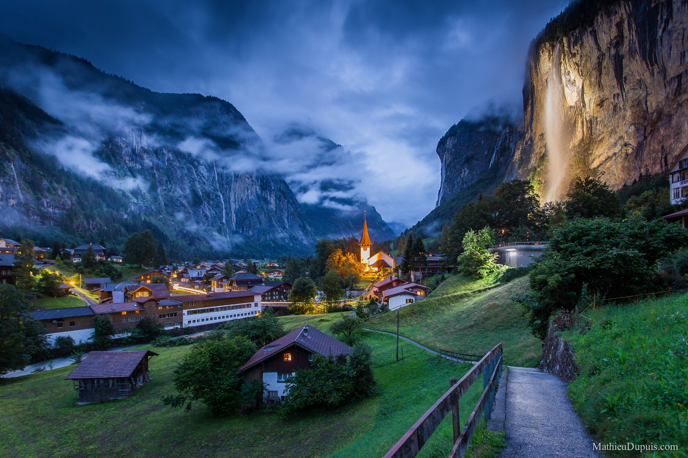

Oh, The Places You'll Go...
Barcelona, Spain
Barcelona is one of my all time favorite cities. Any architecture by Gaudi, seen here in Parc Guell leaves me feeling inspired and straight out of a Dr.Suess book. A beachfront metropolis, Barcelona combines food, art, and nightlife.
Cannon Beach, Oregon
 Oregon is a pretty wonderful place. Especially the view from Haystack Rock, which can be recognized from the popular film, The Goonies. Hikes are accesible nearby over at Point Break beach, found in the 1991 classic, Point Break with a super young Patrick Swayze and Keanu Reeves
Interlaken, Switzerland
The small town of Lauterbrunnen, located in the Interlaken region of Switzerland is the most serenely beautiful place I have ever been. Filled with garden knomes, candlelit cabins, and extreme sports galore, I've debated faking my own death and moving here many a NY Winter.
Dream Destinations:
- Iceland
- Japan
- Morocco